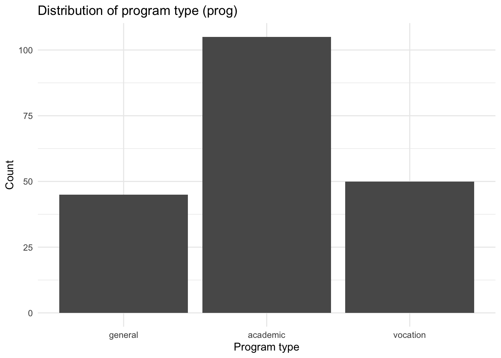
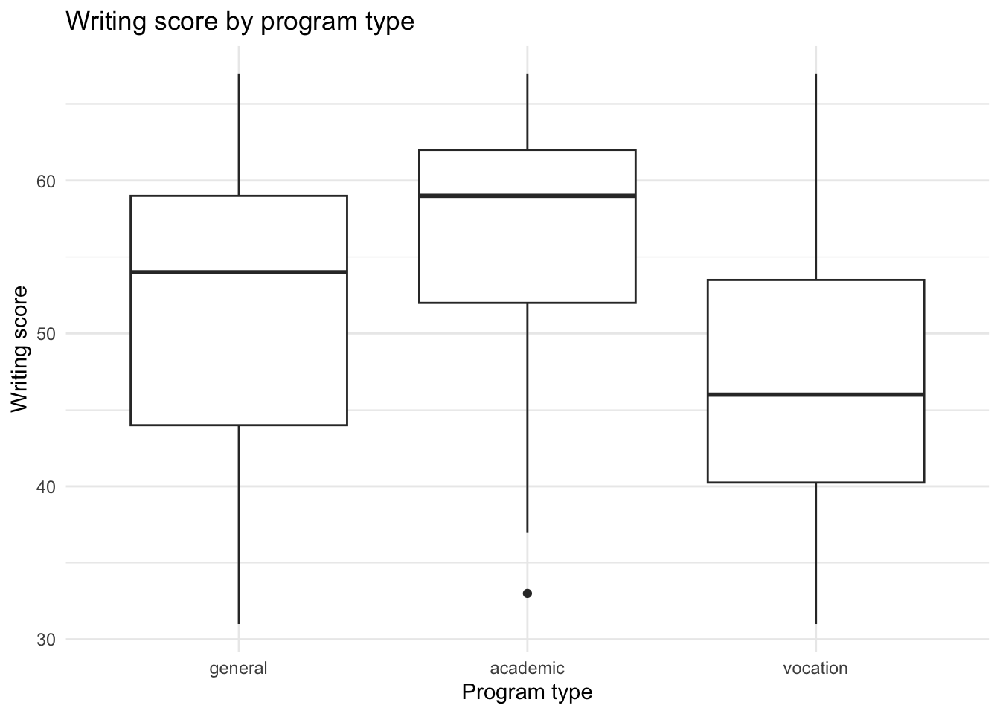

── Attaching core tidyverse packages ──────────────────────── tidyverse 2.0.0 ──
✔ dplyr 1.1.4 ✔ readr 2.1.5
✔ forcats 1.0.0 ✔ stringr 1.5.1
✔ ggplot2 4.0.0 ✔ tibble 3.3.0
✔ lubridate 1.9.4 ✔ tidyr 1.3.1
✔ purrr 1.1.0
── Conflicts ────────────────────────────────────────── tidyverse_conflicts() ──
✖ dplyr::filter() masks stats::filter()
✖ dplyr::lag() masks stats::lag()
ℹ Use the conflicted package (<http://conflicted.r-lib.org/>) to force all conflicts to become errors
Packages
## 1. Packages ----library(foreign) # for read.dtalibrary(nnet) # for multinom()library(ggplot2)
# hsbdemo: 200 students, program choice as outcomeml <-read.dta("https://stats.idre.ucla.edu/stat/data/hsbdemo.dta")# Based on: https://stats.oarc.ucla.edu/r/dae/multinomial-logistic-regression/
id female ses schtyp prog read write math science socst honors
1 45 female low public vocation 34 35 41 29 26 not enrolled
2 108 male middle public general 34 33 41 36 36 not enrolled
3 15 male high public vocation 39 39 44 26 42 not enrolled
4 67 male low public vocation 37 37 42 33 32 not enrolled
5 153 male middle public vocation 39 31 40 39 51 not enrolled
6 51 female high public general 42 36 42 31 39 not enrolled
awards cid
1 0 1
2 0 1
3 0 1
4 0 1
5 0 1
6 0 1
summary(ml)
id female ses schtyp prog
Min. : 1.00 male : 91 low :47 public :168 general : 45
1st Qu.: 50.75 female:109 middle:95 private: 32 academic:105
Median :100.50 high :58 vocation: 50
Mean :100.50
3rd Qu.:150.25
Max. :200.00
read write math science socst
Min. :28.00 Min. :31.00 Min. :33.00 Min. :26.00 Min. :26.0
1st Qu.:44.00 1st Qu.:45.75 1st Qu.:45.00 1st Qu.:44.00 1st Qu.:46.0
Median :50.00 Median :54.00 Median :52.00 Median :53.00 Median :52.0
Mean :52.23 Mean :52.77 Mean :52.65 Mean :51.85 Mean :52.4
3rd Qu.:60.00 3rd Qu.:60.00 3rd Qu.:59.00 3rd Qu.:58.00 3rd Qu.:61.0
Max. :76.00 Max. :67.00 Max. :75.00 Max. :74.00 Max. :71.0
honors awards cid
not enrolled:147 Min. :0.00 Min. : 1.00
enrolled : 53 1st Qu.:0.00 1st Qu.: 5.00
Median :1.00 Median :10.50
Mean :1.67 Mean :10.43
3rd Qu.:2.00 3rd Qu.:15.00
Max. :7.00 Max. :20.00
# Simple bar plot of the outcomeggplot(ml, aes(x = prog)) +geom_bar() +labs(title ="Distribution of program type (prog)",x ="Program type",y ="Count" ) +theme_minimal()

Ideally it would be uniformly distributed, but as long as each category represents more than 1% of the data, it will not be a skewed model.
tab_prog_ses <-table(ml$prog, ml$ses)tab_prog_ses
low middle high
general 16 20 9
academic 19 44 42
vocation 12 31 7
prop.table(tab_prog_ses, margin =2)
low middle high
general 0.3404255 0.2105263 0.1551724
academic 0.4042553 0.4631579 0.7241379
vocation 0.2553191 0.3263158 0.1206897
More descriptive data. We can see it is not equal across income(?) so it likely has an impact.
male female
general 21 24
academic 47 58
vocation 23 27
prop.table(tab_prog_fem, margin =2)
male female
general 0.2307692 0.2201835
academic 0.5164835 0.5321101
vocation 0.2527473 0.2477064
Gender might also relate to the target variable, since it is not equally distributed.
# Boxplot of writing score by programggplot(ml, aes(x = prog, y = write)) +geom_boxplot() +labs(title ="Writing score by program type",x ="Program type",y ="Writing score" ) +theme_minimal()

Fit multinomial logistic regression
# We choose "academic" as the reference categoryml$prog2 <-relevel(ml$prog, ref ="academic")
In this case, we selected academic for the reference variable. There is no strong reason why because we don’t know much about the data set and we are just doing an example. Usually, there would be more forethought into the dataset.
# Split data library(caret)
Loading required package: lattice
Attaching package: 'caret'
The following object is masked from 'package:purrr':
lift
index <-createDataPartition(ml$prog2, p = .80, list =FALSE)train.data <- ml[index,]test.data <- ml[-index,]
# Fit modelmod_mn <-multinom(prog2 ~ ses + female + write + read + math + science + socst, data = train.data)
# weights: 30 (18 variable)
initial value 175.777966
iter 10 value 139.661144
iter 20 value 117.702900
final value 117.607154
converged
The model summary output has a block of coefficients and a block of standard errors. Each of these blocks has one row of values corresponding to a model equation. Focusing on the block of coefficients, we can look at the first row comparing prog = “general” to our baseline prog = “academic” and the second row comparing prog = “vocation” to our baseline prog = “academic”
Coefficients represent the log-odds of being in a given category compared to the baseline category for a one-unit increase in the predictor variable:
Interpretation of math:
A one-unit increase in the variable math is associated with the decrease in the log odds of being in general program vs. academic program in the amount of 0.08
A one-unit increase in the variable math is associated with the decrease in the log odds of being in vocation program vs. academic program in the amount of 0.14
As in logistic regression, exponentiated coefficients indicate the multiplicative effect on odds of an unit increase in the predictor.
Values close to 1 suggest very little to no association.Thus, being female seems not to affect the odds of choosing general vs academic program.
However, females are estimated to be about 39% more likely (i.e multiplying odds by 1.39) than males to choose a vocation program instead of an academic program.
Make predictions and evaluate the model
Train data
# Predicting the values for train datasettrain.data$prog_pred <-predict(mod_mn, newdata = train.data, "class")# Building classification tabletab <-table(train.data$prog2, train.data$prog_pred)tab
academic general vocation
academic 69 8 7
general 19 11 6
vocation 13 4 23
# Calculating accuracy manually - sum of diagonal elements divided by total obsround((sum(diag(tab))/sum(tab))*100,2)
[1] 64.38
Test data
# Predicting the class for test datasettest.data$prog_pred <-predict(mod_mn, newdata = test.data, "class")# Building classification tabletab <-table(test.data$prog2, test.data$prog_pred)tab
academic general vocation
academic 16 1 4
general 5 0 4
vocation 6 1 3
# Calculating accuracy - sum of diagonal elements divided by total obsround((sum(diag(tab))/sum(tab))*100,2)
[1] 47.5
We can also check the probabilities assigned to each class for each observation
probabilities <- mod_mn %>%predict(test.data, type ="probs")classes <- mod_mn %>%predict(test.data, type ="class")